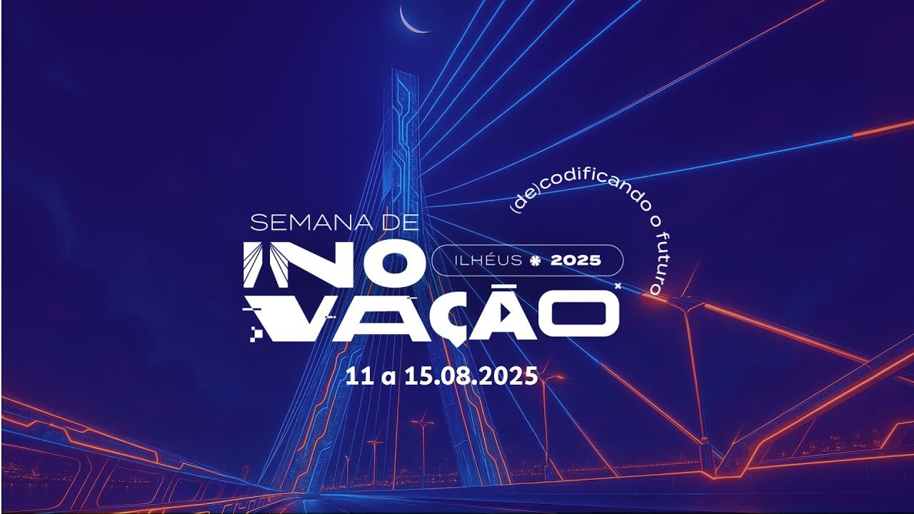
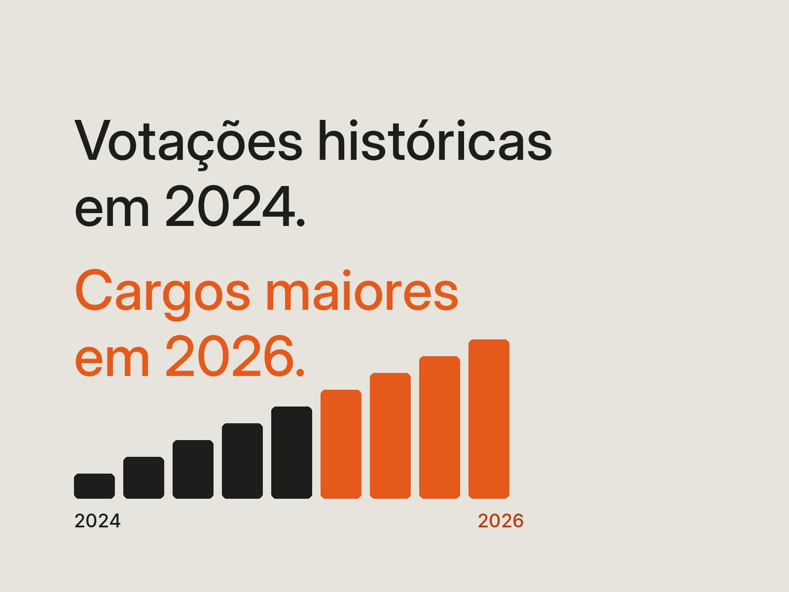

Projetos
Alguns trabalhos de direção criativa, conceito, campanha e redação. Clique em um para ver o problema, o caminho e o que ficou.
-

Gruta da Lapa Doce
Posicionamento e linguagem para um destino turístico que merecia sair do texto genérico.
- Posicionamento
- Conceito
- Tom de voz
- Copy de site
-

Raízes em Flor
Roteiro e curadoria de um documentário sobre a história de Várzea Paulista.
- Documentário
- Roteiro
- Curadoria
- Estratégia editorial
-

Semana de Inovação de Ilhéus
Conceito, tom de voz e copy para um evento que fala com empreendedores em momentos diferentes.
- Conceito
- Tom de voz
- Copy de site
- Evento
-

Tecnologia B2B
Estratégia, pesquisa e comunicação para uma marca de tecnologia B2B estruturada desde o começo.
- Brand building
- Estratégia
- Posicionamento
- Tom de voz
- Playbook
-

Campanhas eleitorais
Comunicação para campanhas em 2024 e 2026, com votações históricas e candidatos eleitos para cargos maiores.
- Copywriting
- Estratégia de conteúdo
- Peças offline
- Comunicação eleitoral
O próximo item dessa lista pode ser o seu projeto.
Se existe um briefing, uma campanha ou uma ideia que ainda precisa encontrar forma, provavelmente temos assunto.